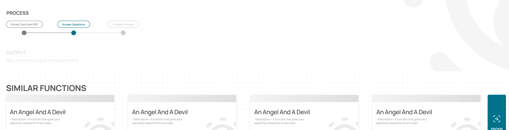
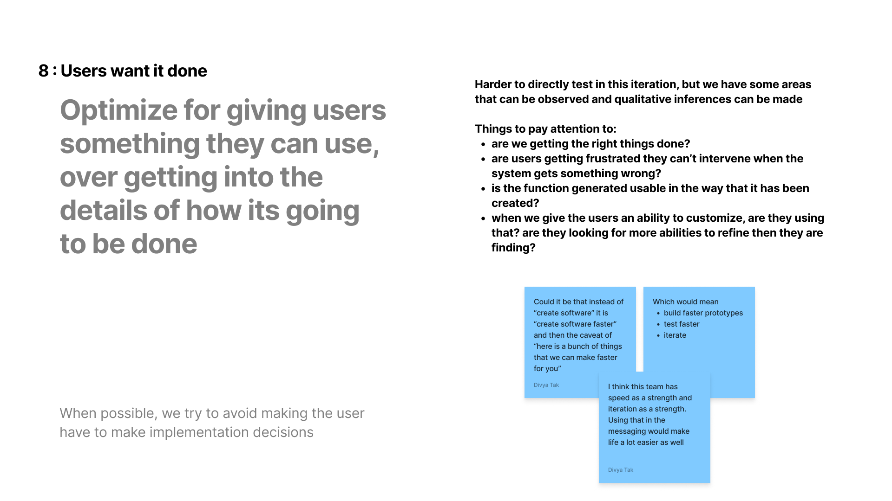
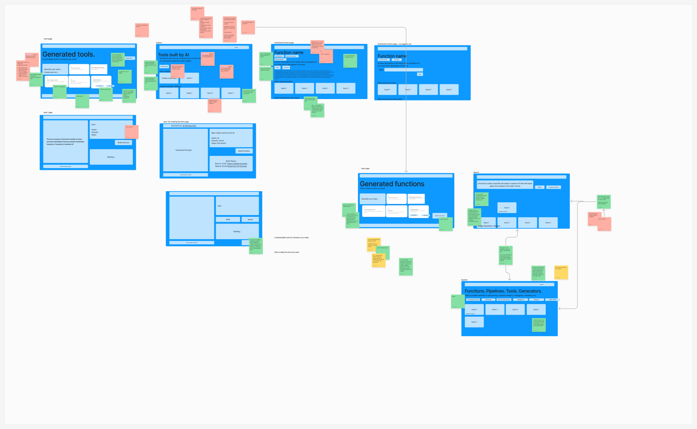
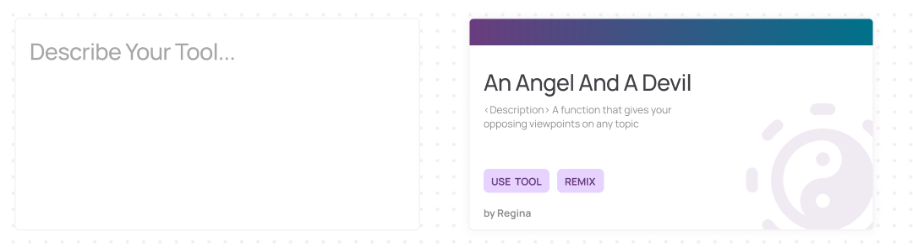
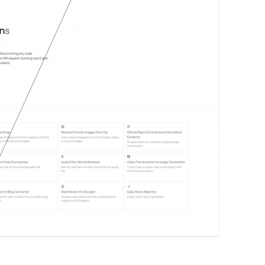

Agemo, nine spines, nine shapes
Product design
A map with a hole in it
The journey model
| What the person is thinking | What the product had for them | What it has now |
|---|---|---|
| “What does this do?” | A front page | A front page |
| “Can I try this for a something simple ...” | Nothing | A tool somebody else made, ready to run |
| “Can I trust this to be consistent for...” | Nothing | That tool's own page, with how often it has run |
| “How can this fit into my workflow for ...” | An empty box | The same empty box, reached last |
The map is hers, drawn before any screen. The page is that map with its two empty places filled.
We map the change of mind first, then give each stage its place in the product.

One page, read from three distances
A single tool's page, and how dense it is
| Read from | What you take in | Who stops here |
|---|---|---|
| A glance | Its name, one sentence, and Run | “Tool consumer” |
| A read | The long description, the steps it goes through, the tools most like it | “Tool remixer” |
| A study | Use spec, Get API, Get code | “Tool Builder”, “Tool Chainer” |
Nothing is hidden and nothing is taken out: “Giving description, detailed description, directly letting user see spec link etc. despite it being more information dense as a design solution”
We keep the depth, and build the way up to it.


Told backwards, from the last thing they see
How a first visit ends
| Working back from the end | |
|---|---|
| The last thing they see | A result. In the old product, that was all: “MIssing end point (what do i do with this now?)” |
| So the end was designed first | Under the result, the tools most like it. Beside it, a way to take it with you. |
| Before that | The run itself, one step at a time, so the wait reads as work. |
| Before that | A tool they did not have to make. |
| Which decides the first thing they see | “Let the user feel they have created / found / can show something of value for the time invested” |
The story runs in reverse, and stops at the front page.
We design the first ten minutes to earn the next visit, not to close the sale.





Product strategy
The brief, with our notes in the margin
What was asked for, line by line, against what the research said
| What was asked | What was underneath it |
|---|---|
| “Cleaning up onboarding” | There was nothing to board. The only way in was an empty box. |
| “Simplify UX?” | Not simpler. Clearer about what it is for: “What are you really good at?” |
| “Cleaning up communication” | The words were the team's, not the user's: “Create a function that... I don’t know what a function is.” |
| “Enable, or at least push, the user to create a successful function on first try” | Not on the first try. On the visit they are ready: “We believe that new users will not be prepared to create from a blank prompt at first” |
Every line of the brief was answered, one level down from where it was asked.
We answer the brief by finding the problem underneath it.

An argument between two people that ends in a rule
One thread of sticky notes between Divya and Kahran
| Divya | Kahran |
|---|---|
| “whats the intent difference with this vs the landing page text?” | |
| “too much overlap between these two” | |
| “is this intent and curiosity? how are we grabbing intent” | |
| “what if we had search that replaced my library or something? i donno” | |
| “if i>c then things might be more clear?” |
It became the third bet, in one line: “Favor people who have a goal to complete, and secondarily support people who are curious or idly browsing”
We choose who comes first, and then hold to it on every page.



Three no's, each for a different reason
The things turned down, and on whose behalf
| No to | On behalf of | In the note's own words |
|---|---|---|
| Search | The user. It is a worse act than making. | “there is no point in replacing create with a far lower quality action” |
| Free runs | The business. | “it would be not useful to the buisness.” |
| The avid, community user | The moment. Not yet. | “at the moment we dont need to design for that” |
Three panels. A no is only useful with a reason someone can argue with.
We keep the product about one act, and say no to the rest out loud.



Storytelling
One slot, one line at a time
The headline, and every line that sat in its place
| In the slot | What was wrong with it |
|---|---|
| “AI-tools. For every Job.” | “these arent AI tools though. They are tools made with AI.” |
| “There’s a tool for that.” | “EWverything might not preexist” |
| “Generated tools.” | Nothing, for two rounds. |
| “Generated Code.” “AI for Software.” | Each a little off. Each gone. |
| “Outsource to AI.” | It stayed. |
Only the words move. The front page appears around the last one.
We write the headline as a design problem, until the product fits inside it.


Two columns, the same job twice
The pitch against what people already do
| The job | Today | With CodeWords |
|---|---|---|
| Find a tool | A search, ten results | One page of them |
| Use it | It works. You close the tab. | It works. It stays in your library. |
| Need it again | Search again | It is where you left it |
| Need it a little different | A different site | Change the one you have |
| No such tool | You go without | Describe it |
The left column never changes. That is the point: “a new way of completing an existing behavior to users, not a new behavior”
We design against what people already do, not against an empty space.


A wall that fills up
One workshop: the team writing a newcomer's thoughts onto their own product
| On the wall | |
|---|---|
| Their product, drawn as one line | Home, a prompt, a build, a run. |
| One thing asked of them | What is a newcomer thinking going into each step, and coming out of it? |
| The first notes | “I don’t really know what types of thing I can build with CodeWords” |
| Then faster | “what are integrations?” “Do I just sit and wait?” “What is this page for?” |
| Sixty-one notes | The diagram can hardly be seen under them. |
Nobody from outside told them what was wrong. It is on the wall, in their words.
We get the team to find the problem themselves, so the fix is theirs too.